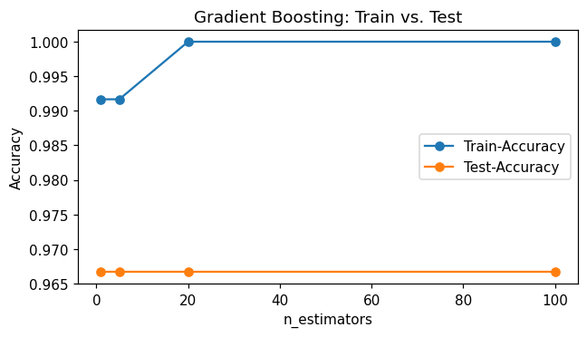
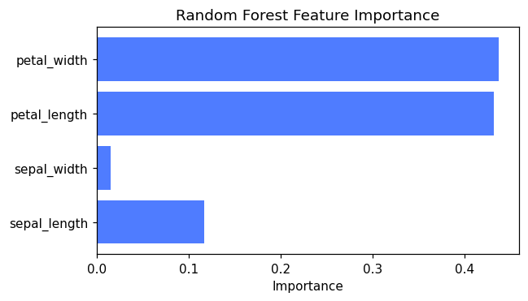

Selbst programmieren
Lies die Aufgabenstellung und vergleiche dein Ziel mit der „Erwarteten Ausgabe“.
Schreibe deine Lösung dann selbst im freien Code-Bereich,
der per Klick auf „▶ Code ausführen“ echtes Python (Pyodide, inkl. numpy/pandas/scikit-learn)
im Browser ausführt. Erst danach die Musterlösung aufklappen.
Alle Aufgaben arbeiten mit dem iris-Datensatz (150 Samples, 4 Features, 3 Klassen).
🌳 Entscheidungsbaum: Tiefe & Blätter
LeichtTrainiere einen DecisionTreeClassifier ohne Tiefenbegrenzung und untersuche seine Struktur.
- Trainiere
DecisionTreeClassifier(random_state=42)aufX_train, y_train. - Gib die Test-Accuracy aus (3 Nachkommastellen).
- Gib die tatsächliche Tiefe (
get_depth()) und die Anzahl Blätter (get_n_leaves()) aus.
Test-Accuracy: 0.933 Tree depth: 5 Leaves: 8
💡 Musterlösung anzeigen
Ohne max_depth wächst der Baum, bis alle Blätter „rein“ sind (nur noch eine Klasse
enthalten) oder zu wenige Samples für einen weiteren Split übrig sind. Hier entstehen 8 Blätter
bei einer Tiefe von 5 — ein einzelner Baum ist sehr flexibel, aber auch anfällig
für Overfitting auf einzelne Trainingsbeispiele.
from sklearn.tree import DecisionTreeClassifier
tree = DecisionTreeClassifier(random_state=42)
tree.fit(X_train, y_train)
print("Test-Accuracy:", round(tree.score(X_test, y_test), 3))
print("Tree depth:", tree.get_depth())
print("Leaves:", tree.get_n_leaves())Test-Accuracy: 0.933 Tree depth: 5 Leaves: 8
🎒 Bagging: viele Bäume aus Bootstrap-Samples
MittelVergleiche einen einzelnen Entscheidungsbaum mit einem BaggingClassifier aus 50 Bäumen.
- Trainiere
DecisionTreeClassifier(random_state=42)(Single Tree). - Trainiere
BaggingClassifier(DecisionTreeClassifier(), n_estimators=50, random_state=42). - Gib die Test-Accuracy beider Modelle aus (3 Nachkommastellen).
Single Tree: 0.933 Bagging (50 trees): 0.967
💡 Musterlösung anzeigen
Bagging (Bootstrap Aggregating) trainiert viele Bäume auf zufälligen Stichproben mit Zurücklegen aus den Trainingsdaten und mittelt am Ende über alle Vorhersagen (Mehrheitsentscheid). Da einzelne Bäume stark auf zufällige Trainingsdaten reagieren (hohe Varianz), gleicht das Mitteln viele dieser Fehler aus — die Bagging-Ensemble-Accuracy ist hier etwas höher als die des einzelnen Baums.
from sklearn.tree import DecisionTreeClassifier
from sklearn.ensemble import BaggingClassifier
tree = DecisionTreeClassifier(random_state=42)
tree.fit(X_train, y_train)
bag = BaggingClassifier(DecisionTreeClassifier(), n_estimators=50, random_state=42)
bag.fit(X_train, y_train)
print("Single Tree:", round(tree.score(X_test, y_test), 3))
print("Bagging (50 trees):", round(bag.score(X_test, y_test), 3))Single Tree: 0.933 Bagging (50 trees): 0.967
🌲 Random Forest: Train- vs. Test-Accuracy
MittelTrainiere einen RandomForestClassifier mit 100 Bäumen.
- Erstelle
RandomForestClassifier(n_estimators=100, random_state=42)und fitte ihn aufX_train, y_train. - Gib Train- und Test-Accuracy aus (3 Nachkommastellen).
Train: 1.0 Test: 0.9
💡 Musterlösung anzeigen
Ein Random Forest besteht aus vielen Bäumen, die zusätzlich zum Bootstrap-Sampling bei jedem Split nur eine zufällige Teilmenge der Features betrachten — das macht die einzelnen Bäume weniger korreliert als bei reinem Bagging. Train-Accuracy ist (wie bei einem einzelnen ungebremsten Baum) bei 1.0, da jeder Baum die Trainingsdaten perfekt auswendig lernt. Wichtig ist der Vergleich auf neuen Daten (Test-Accuracy) — auf dem kleinen, einfachen Iris-Datensatz bringt der Random Forest hier keinen großen Vorteil gegenüber einem einzelnen Baum, sein eigentlicher Nutzen zeigt sich vor allem auf größeren, „rauschigeren“ Datensätzen.
from sklearn.ensemble import RandomForestClassifier
rf = RandomForestClassifier(n_estimators=100, random_state=42)
rf.fit(X_train, y_train)
print("Train:", round(rf.score(X_train, y_train), 3))
print("Test:", round(rf.score(X_test, y_test), 3))Train: 1.0 Test: 0.9
📊 Feature Importance des Random Forest
MittelBestimme, welche der 4 Iris-Features für den Random Forest am wichtigsten sind.
- Trainiere wie in Aufgabe 3
RandomForestClassifier(n_estimators=100, random_state=42). - Iteriere über
feature_namesundrf.feature_importances_und gib für jedes Feature den Wert aus (3 Nachkommastellen).
sepal_length: 0.116 sepal_width: 0.015 petal_length: 0.431 petal_width: 0.437
💡 Musterlösung anzeigen
feature_importances_ misst, wie stark jedes Feature im Durchschnitt über alle Bäume
zur Reduktion der Unreinheit (Gini) beigetragen hat. petal_length und
petal_width dominieren mit zusammen 87% — das deckt sich mit dem
biologischen Wissen, dass die Blütenblattgröße die Iris-Arten am stärksten unterscheidet, während
sepal_width kaum Information beiträgt.
from sklearn.ensemble import RandomForestClassifier
rf = RandomForestClassifier(n_estimators=100, random_state=42)
rf.fit(X_train, y_train)
for name, imp in zip(feature_names, rf.feature_importances_):
print(f"{name}: {imp:.3f}")sepal_length: 0.116 sepal_width: 0.015 petal_length: 0.431 petal_width: 0.437
🚀 Boosting: Train-Accuracy über die Stufen
SchwerUntersuche, wie sich Train- und Test-Accuracy von GradientBoostingClassifier mit wachsender Anzahl Bäume verändern.
- Trainiere für
n_estimators in [1, 5, 20, 100]jeweils einGradientBoostingClassifier(n_estimators=n, random_state=42). - Gib für jedes
n_estimatorsTrain- und Test-Accuracy aus (3 Nachkommastellen). - Wie verändert sich die Lücke zwischen Train- und Test-Accuracy?
n_estimators=1: train=0.992 test=0.967 n_estimators=5: train=0.992 test=0.967 n_estimators=20: train=1.000 test=0.967 n_estimators=100: train=1.000 test=0.967
💡 Musterlösung anzeigen
Boosting baut Bäume sequenziell: jeder neue Baum korrigiert die Fehler (Residuen)
der bisherigen Ensemble-Vorhersage. Mit mehr Bäumen sinkt der Trainingsfehler kontinuierlich
(Train-Accuracy steigt von 0.992 auf 1.0), während die Test-Accuracy bereits ab n_estimators=1
ihr Plateau bei 0.967 erreicht hat. Das zeigt: zusätzliche Bäume verbessern hier nur noch die
Anpassung an die Trainingsdaten, ohne die Generalisierung zu verbessern — ein Hinweis darauf,
dass zu viele Boosting-Stufen zu Overfitting führen können.
from sklearn.ensemble import GradientBoostingClassifier
for n in [1, 5, 20, 100]:
gb = GradientBoostingClassifier(n_estimators=n, random_state=42)
gb.fit(X_train, y_train)
print(f"n_estimators={n}: train={gb.score(X_train,y_train):.3f} "
f"test={gb.score(X_test,y_test):.3f}")n_estimators=1: train=0.992 test=0.967 n_estimators=5: train=0.992 test=0.967 n_estimators=20: train=1.000 test=0.967 n_estimators=100: train=1.000 test=0.967
Im Plot sieht man sehr schön, wie die Train-Accuracy (blau) langsam von 0.992 auf 1.0 steigt, während die Test-Accuracy (orange) von Anfang an bei 0.967 ein Plateau bildet und nicht weiter ansteigt. Die kleine, aber wachsende Lücke zwischen beiden Linien ist der Beginn von Overfitting — zusätzliche Boosting-Stufen bringen ab einem bestimmten Punkt keinen Nutzen mehr für neue Daten.
import matplotlib.pyplot as plt
ns = [1, 5, 20, 100]
train_acc, test_acc = [], []
for n in ns:
gb = GradientBoostingClassifier(n_estimators=n, random_state=42)
gb.fit(X_train, y_train)
train_acc.append(gb.score(X_train, y_train))
test_acc.append(gb.score(X_test, y_test))
plt.plot(ns, train_acc, marker='o', label='Train-Accuracy')
plt.plot(ns, test_acc, marker='o', label='Test-Accuracy')
plt.xlabel("n_estimators"); plt.ylabel("Accuracy")
plt.title("Gradient Boosting: Train vs. Test")
plt.legend()
plt.show()
📊 Feature Importance als Balkendiagramm
LeichtStelle die feature_importances_ des Random Forest aus Aufgabe 4 als horizontales Balkendiagramm dar.
- Trainiere wie in Aufgabe 3/4
RandomForestClassifier(n_estimators=100, random_state=42). - Nutze
plt.barh(feature_names, rf.feature_importances_)für ein horizontales Balkendiagramm. - Beschrifte die x-Achse mit „Importance“ und gib dem Plot einen Titel.
Ein horizontales Balkendiagramm mit 4 Balken (einer pro Feature). petal_length und petal_width haben die längsten Balken (~0.43), sepal_width den kürzesten (~0.02).

💡 Musterlösung anzeigen
Der Balkenplot übersetzt die Zahlen aus Aufgabe 4 direkt in ein Bild: petal_length
und petal_width haben mit Abstand die längsten Balken (zusammen ~87% der
Gesamt-Importance), sepal_width den kürzesten. Solche Plots sind in der Praxis
oft der erste Schritt, um zu entscheiden, welche Features man überhaupt behalten möchte
(Feature Selection) oder welche Messungen man bei neuen Daten priorisieren sollte.
from sklearn.ensemble import RandomForestClassifier
import matplotlib.pyplot as plt
rf = RandomForestClassifier(n_estimators=100, random_state=42)
rf.fit(X_train, y_train)
plt.barh(feature_names, rf.feature_importances_, color='#4f7cff')
plt.xlabel("Importance")
plt.title("Random Forest Feature Importance")
plt.show()